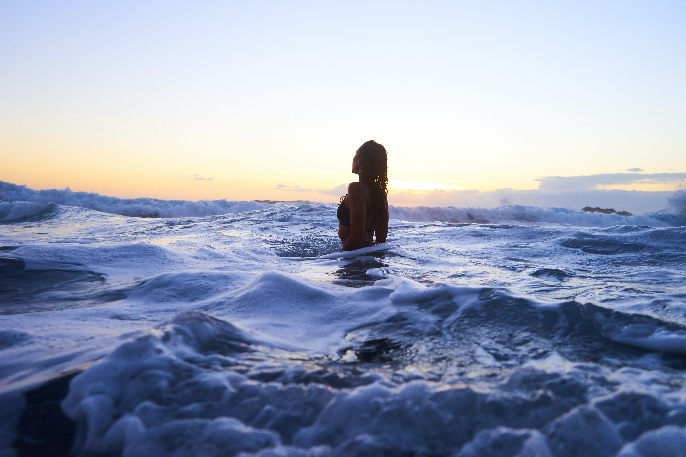

Curator's Pick
Crimson Horizon
A sophisticated exploration of light and shadow, capturing the vibrant interplay between nature and abstract emotion.
Acquire PieceExperience the profound depth of texture, color, and emotion through our exclusive collection of contemporary masterpieces.
A sophisticated exploration of light and shadow, capturing the vibrant interplay between nature and abstract emotion.
Acquire PieceIntimate and evocative, this piece utilizes heavy impasto techniques to create a tangible sense of atmosphere.
Acquire PieceA striking composition that balances structural geometry with fluid, expressive brushstrokes.
Acquire PieceDark, moody, and deeply resonant. This artwork invites the viewer to discover hidden details within its textured layers.
Acquire PieceA masterful use of negative space, allowing the rich, vibrant acrylic hues to breathe and command attention.
Acquire Piece
A dynamic explosion of chromatic intensity, reflecting the fragmented nature of modern existence.
Acquire PieceA transcendent piece that serves as the culmination of our gallery's stylistic vision. Pure, unadulterated emotion on canvas.
Acquire Piece